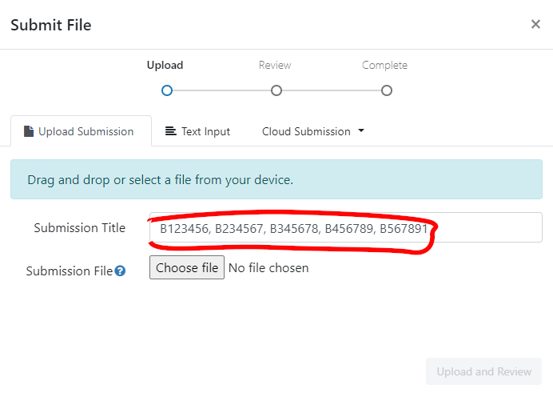

USMR Group Project 2023/24
Your task is to describe and analyse some data in order to provide answers to a set of research questions. Analyses will draw on the methodologies we have discussed in lectures, readings and lab exercises.
Stop! Before you do anything else, make sure that every member of the group has a record of everyone else’s exam numbers, which can be found on their matriculation cards (see here for more information). Whoever submits the coursework on behalf of the group will need to provide these numbers at submission time.
Group work policy
Please note that each group should submit a single report (two documents: see what-you-need-to-submit). All group members are expected and encouraged to contribute to the report, but you should not work with other groups.
Similarity checks will be performed, and further investigations will be carried out if assignments from different groups are similar.
What you need to submit
Each group is required to submit 2 documents.
- A final compiled report (.pdf format), detailing your analyses, results, interpretation and conclusions.
- No longer than 6 pages, excluding optional appendix (see below)
- Doesn’t contain visible R code. Sort of like the “analysis and results” section of a published paper, which describes, reports, presents and interprets (more detail in how-to-approach-the-questions).
- The .R or .Rmd document which reproduces the results you give in the report.1
Page limit
Your report should be no longer than 6 pages.
If you are knitting to html, please open the html in a browser and print to pdf in order to check how many pages your submission takes up).
An OPTIONAL Appendix of maximum four pages2 can be used to present additional tables and figures, if you wish (but there is no requirement to do this).
The appendix is a good place for supplementary materials. By this we mean figures and tables that are not strictly necessary for the reader to understand and replicate your results, but provide additional context to your report.
- good use of the appendix:
“The model met the assumptions of linear regression with residuals showing a constant mean of approximately zero across the fitted values (see appendix Fig X), and …” - not so good use of the appendix:
“The model met assumptions (see appendix Fig X).”
Report Formatting
We expect most groups to do their analyses using a standalone R script, and to write the report in a separate word-processor document detailing those analyses. You should then export the word-processor document to .pdf format for submission. The R Script should remain as a text file with a .R suffix.
For some groups, it may be sensible to use a collaborative word-processor such as Google Docs. Unfortunately there are no straightforward ways to edit .R documents collaboratively; we suggest that each group ensures it knows who holds the “master copy” of the script that will be submitted.
Some groups may find it useful to use RMarkdown (.Rmd) files for initial formatting. For example, you might like to knit to a Word file from an RMarkdown document, and to subsequently make edits to your text and formatting in the Word document itself (or in a Google Doc obtained by uploading the Word document to Google Drive).3
We don’t mind which of these approaches each group takes: The important thing to remember is that the data analysis and modelling results in the report should match those produced in your R or RMarkdown file.
If you do wish to do some or all of your formatting in RMarkdown, then we suggest the following readings for help:
Feel free also to post formatting questions on the Piazza discussion forum.
A note on knitting .Rmd directly to pdf
Getting RMarkdown to knit directly to pdf can be a pain, and formatting is difficult.
We recommend:
- knit to .html, then Ctrl+P to print to .pdf
- knit to .docx, then export to .pdf
A template .Rmd file
We have provided a template .Rmd file for you to use, which can be downloaded here. In the template, you will find empty code chunks for you to add R code to. However, you should feel free to create more if you wish: This is just a template, and is mainly designed to make your life easier. The template sets echo = FALSE for all code-chunks. This means that your R code (but not the output) is hidden in the compiled document.
If you use RStudio on the PPLS Server, you will need to upload the template .Rmd file to your space on the server in order to use it.
Submitting your files
Pre-submission checks
Before submitting, we strongly advise you to check that your group’s code runs. The easiest way to check this is to:
- if using an .R script: Clear your environment, restart your R session (top menu, Session > Restart R), and run your code line by line to see if any errors arise.
- if using RMarkdown: Check that your .Rmd compiles (i.e., can you
knityour Rmarkdown document into.html/.pdf/.docxwithout error?)
If you use RStudio on the PPLS Server, you may need to export the file to your computer in order to upload it to Turnitin.
Filenames
For both files which you submit, the filename should be your group name with the appropriate extension, and nothing else.
For example, the group Asymptotic Antelopes would submit two files:
- one of AsymptoticAntelopes.R / AsymptoticAntelopes.Rmd
- AsymptoticAntelopes.pdf
For anyone who has obtained permission to complete the task individually, please name each file with your exam number (the letter “B” followed by a six digit number - which can be found on your student card: See here for more information). For example, if your exam number was B123456 you would submit:
- one of B123456.R / B123456.Rmd
- B123456.pdf
You should also write your exam number in the “Submission Title” box prior to submission.
Where to submit
ONLY ONE PERSON FROM EACH GROUP NEEDS TO SUBMIT
We suggest that you do this together/on a call, so that all group members are able to confirm that they are happy to submit.
Go to the Assessments page on Learn, and look for “Assessment Submission”. There you will find an own-work declaration which requires marking as reviewed, before two submission boxes will be visible (one for each file), where you can submit.
For each file you should complete the “Submit File” popup by entering the exam numbers of all of your group members in the “Submission Title” box (see below).

Late penalties
Submissions are considered late until both files are submitted on Turnitin (see the PPLS policy on late penalties on the MSc Hub).
Grading
We are primarily marking each group’s report, and not your code
Grades and feedback are provided for the finished reports, with marks awarded for providing evidence of the ability to:
- understand and execute appropriate statistical methods to answer each of the questions
- provide clear explanation of the methods undertaken
- provide clear and accurate presentation and interpretation of results and conclusions.
Why we still want your code
We still require your code so that we can assess the reproducibility of your work. We also use it as a way to give you extra marks based on the elegance of your coding and/or use of RMarkdown.
- Five points will be deducted from your final grade if your marker cannot determine how the results in your report were generated in your
.Rmd/.Rdocument (for example, if the code produces errors or produces values different from those reported). This means that a 75 out of 100 becomes 70 out of 100. - Up to ten points will be added for good use of R or RMarkdown (for example, where code is elegant, or when inline R code is used to report results in the text). For example, a 70 might be raised up to 80.
Peer-adjusted marking
Once the group project has been submitted, every member of the group will complete the peer-assessment, in which you will be asked to award “mark adjustments” to yourself and to each of the other members of your group. This will be done through Learn; details will be made available over the next couple of weeks. Each submitted mark should be understood as follows: Relative to the group as a whole, how much did each member contribute? If someone made an average contribution, you should award that person an adjustment of zero. If they contributed substantially more, you may choose to give a positive mark; if they genuinely contributed less, you might choose a negative mark. Marks for each group member are averaged together, and then used as “weights” to adjust the overall project mark. You can see an example of how this logic works by visiting https://uoe-psy.shinyapps.io/peer_adj/ where there is a “live demo” of a peer-adjustment system.
If you don’t contribute any peer-adjustment marks, we will treat this as equivalent to saying that, in your opinion, everyone in the group contributed equally to the project (i.e., you awarded zero to each group member).
How to approach the task
For each of the questions below, the report (final .pdf) is expected to include:
- Clear written details of the analysis conducted and how it can provide an answer the question, including transparency with regards to decisions made about the data prior to and during analyses.
- Presentation of results where appropriate (in the form of tables or plots).
- Statistical findings, in appropriate detail (for instance, a test statistic, standard error, and p-value, not just one of these). Remember to cite degrees of freedom where needed.
- Interpretation (in the form of a written paragraph(s) referencing relevant parts of your results and statistics) leading to a conclusion regarding the question.
The code you write in your submitted .R/.Rmd file should successfully undertake the analysis described in A), which returns C). You should also include the code to produce B).
Important (Helpful) Tips:
The
.pdfreport should not contain visible R code, meaning that a large part of the challenge comes in clearly describing all aspects of the analysis procedure.A reader of your report should be able to more or less replicate your analyses without referring to your R code (or using R, if they are unenlightened).
Write as if the reader has a very basic understanding of statistics and does not necessarily use R.
You do not need to include information about the study background or the collection of the data in your report.
Any Questions?
This document contains a basic overview of the task and of how to submit it. If you have any questions concerning the coursework report, we ask that you post them on the designated section of the Piazza discussion forum on Learn. If you have a question, it is likely your classmates may have the same question. Before posting a question, please check the on-line board in case it has already been answered.
THE COURSEWORK
Background & Study Aims
🔙🏞 & 📊🏁
A group of researchers is interested in the increasing use of emoji for communication, and in how they are interpreted. In particular, they are interested in whether emoji can be used to convey emotional information. Previous research suggests that, unsurprisingly, people who use emoji more frequently understand them better. The researchers are interested in whether the age of the user also has an effect, although they are not sure whether the effect will be the same for all types of emoji.
In this study the researchers have focused on three specific emoji which are widely used, and which have previously been associated with emotional ambiguity (“loudly crying face”, 😭; “thumbs up”, 👍; “slightly smiling face”, 🙂). They are interested in participants’ emotional responses to the emoji, and (separately) in whether their interpretations of the emoji are accurate (in the sense of agreeing with the ways in which the emoji are generally interpreted).
Methods
A random sample of participants took part in the study, using their own smartphones. They were asked to provide their ages and to estimate how frequently they used emoji; because emoji can look different on different phones, the experimental software also recorded which operating system they were using (apple or android). In the main part of the experiment, they were shown a single emoji (one of 3, as detailed above) and were asked to type in an interpretation of its meaning. As well as recording what was typed in, the experimental software recorded a number of other metrics which were combined to produce an emotional valence score (EVS), a single number which represents a participant’s emotional state while typing (higher value = more positive emotions, with zero as ‘neutral’).4 The researchers subsequently read each description, and coded it as “correct” or “incorrect” depending on whether they believed it corresponded to the most widely-used interpretations of the emoji.
Getting the data
You can access the data by running the following lines, where you replace the words asymptotic_antelopes with your group name (keep the quotes).
library(tidyverse)
source("https://edin.ac/4616rYu")
get_my_data(group_name = "asymptotic_antelopes")For anyone who has obtained permission to complete the task individually, please use your exam number (the letter “B” followed by a six digit number - which can be found on your student card: See here for more information), and set individual = TRUE in the get_my_data() function.
library(tidyverse)
source("https://edin.ac/4616rYu")
emoji <- get_my_data(group_name = "B123456",
individual = TRUE)You may want to put the (edited) lines above at the beginning of your analysis script to ensure that you are analysing the correct data.
After running the code above, data from the emoji experiment are found in the object emoji (see Table 1) in your environment.
Please note: The data you are analysing is not real! Although we have tried to make the values plausible, you don’t need to know anything about emoji or how mobile phones work in order to complete the report, which should be written as if the data was collected as described.
Note also that the data you obtain will be unique to your group, which means that the results of any statistics you run will also be unique to the group. In some cases, you may find different significant effects to those of other groups: This is nothing to worry about, and your markers will know how to check your individual results.
| variable | description |
|---|---|
| name | participant name |
| age | age of participant (in years) |
| opsys | operating system of phone |
| freq_emu | self-reported frequency of emoji use (emoji/day) |
| em_cat | type of emoji presented to this participant |
| EVS | emotional valence score (-infinity to infinity) |
| EI | emoji interpretation ('correct' vs 'incorrect') |
Report Tasks
0. Check the data!
Researchers can’t always be trusted to provide perfect data (and your course team is no exception 😈). Make sure you check over your data before starting on the report.
1. What do we know about the sample? (Describe and Explore)
Suggestion: 2 pages
Hint: When providing a description of your sample, think about the tradeoff between space used (by, for example, a figure or table) and detail (in writing). There’s no right way to describe the sample, but readers will want to understand the basic “shape” of the data.
Prior to conducting the main analyses, the researchers would like some descriptive statistics on the participants in the study. In addition, they would like you to test and report on:
- Whether there’s any difference in the frequency of emoji use between apple and android users.
- Whether there is an association between age and frequency of emoji use, and if so, in what direction.
- Whether there is a balance between apple and android users for each category of emoji.
Provide a suitable brief description of the dataset, and then answer each of the questions above using an appropriate statistical test.
2. The Emotional Effects of Emoji
Suggestion: 2 pages
Hint: Neither this analysis nor the one below need be very complex. Think about the background-&-study-aims, and what the researchers already “know” to be true; what they suspect might affect things (but aren’t necessarily interested in); and what the focus of their research is.
Have another look at how-to-approach-the-questions for some guidance on what you might include in this section (and in section 3).
The first major research aim is to investigate which factors influence emotional resonance.
Conduct and write up appropriate analysis/analyses to address this question.
Take care to keep in mind the study aims.
3. Accuracy of Interpretation
Suggestion: 2 pages
The second research aim is to explore what factors make participants more or less likely to correctly interpret emoji. Again, your task is to conduct and write up appropriate analysis/analyses to address this research aim of the study.
Footnotes
.qmd is also acceptable.↩︎
meaning that your final
.pdffile should be max 10 pages.↩︎https://rstudio.ppls.ed.ac.uk supports knitting to .html, .pdf and word (.docx); choose by clicking the drop-down arrow next to “Knit”.↩︎
If this were true, the metrics recorded might include things such as speed of typing, how hard the screen is touched to produce each character, how steadily the phone is held, and an analysis of the participant’s facial expression. There’s no need to comment on this in the report, though; just go with EVS as a score which measures emotion 😉.↩︎